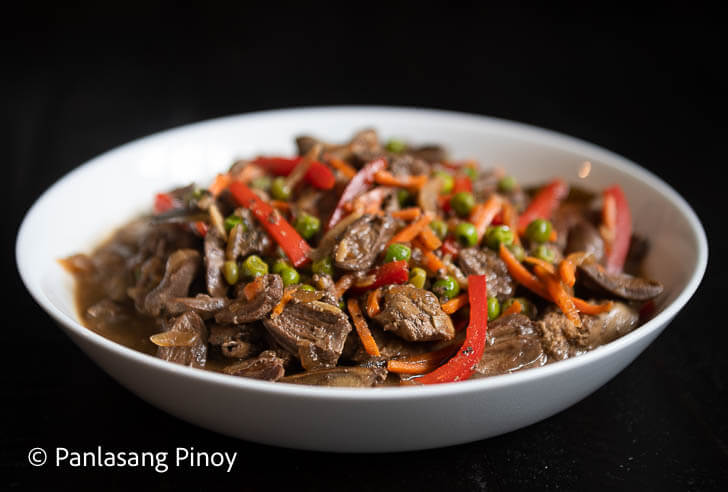
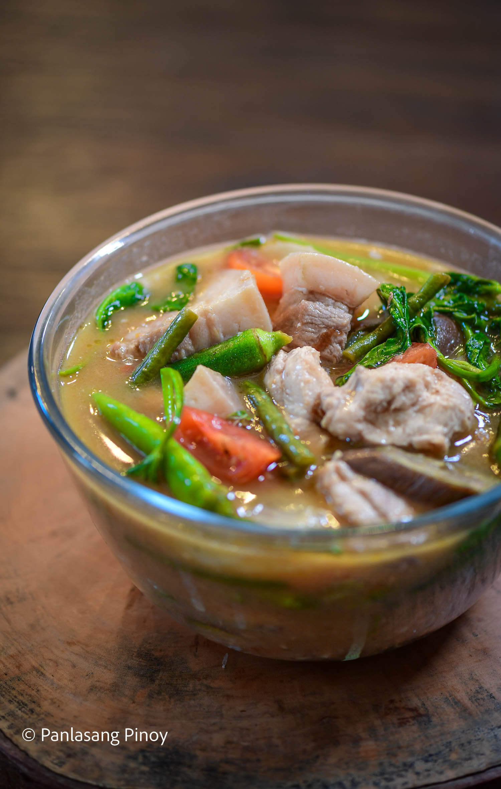

Pork and Chicken Sinigang
Sinigang, in itself, is a more acidic, but soothing type of stew enriched with the flavor of sampaloc. It also welcomes a beautiful mix of vegetables, starting with the classic daikon radish and taro or gabi.